9 数据所有权与分布式事务
12 月 10 日，星期五，09:12
数据库团队在拆分 Sysops Squad 单体数据库时，开发团队和架构师 Addison 也开始在服务与数据之间建立限界上下文，并在此过程中把数据表所有权分配给服务。
“为什么把专家资料表放进工单分配服务的限界上下文？”Addison 问。
“因为工单分配算法依赖这张表，”Sydney 说，“它会持续查询，从中取得专家的位置与技能信息。”
“但它只会查询专家表，”Addison 说，“用户维护服务才包含维护这些信息的数据库更新功能。因此，在我看来，专家资料表应该属于用户维护服务，并放进它的限界上下文。”
“我不同意，”Sydney 说，“分配服务每次查询都远程调用用户维护服务，成本根本承受不起，完全行不通。”
“那么，专家获得新技能或改变服务地点时，数据表怎样更新？公司聘用新专家时呢？”Addison 问，“这些流程应该怎样工作？”
“很简单，”Sydney 说，“用户维护服务仍然可以访问专家表，只要连接另一个数据库就行。这有什么大不了的？”
“你忘了 Dana 之前说过的话吗？多项服务可以连接同一个数据库模式，但一项服务不能连接多个数据库或模式。Dana 明确说这条路走不通，也不会允许发生。”Addison 说。
“哦，对，我忘了这条规则，”Sydney 说，“那怎么办？一项服务偶尔需要更新表，另一项属于完全不同领域的服务却要频繁读取它。”
“我不知道正确答案是什么，”Addison 说，“显然，我们必须和数据库团队更紧密地协作，才能理清这些问题。我去问问 Dana 有没有建议。”
数据拆开之后，还必须重新拼接起来，系统才能作为整体运行。这意味着需要确定哪些服务拥有哪些数据、怎样管理分布式事务，以及服务如何访问自己需要但已经不再拥有的数据。本章将探讨重新组合分布式数据时的所有权与事务问题。
9.1 分配数据所有权
在分布式架构中拆开数据后，架构师必须确定每项数据由哪项服务拥有。不幸的是，把数据所有权分配给服务并没有听起来那么容易，它又成为软件架构的一项难题。
分配数据表所有权的一般经验法则是：对某张表执行写操作的服务拥有该表。这条规则适用于单一所有权，也就是始终只有一项服务写表；遇到联合所有权，即多项服务写入同一张表时，事情就会变得混乱；如果是公共所有权，即大多数或全部服务都写入该表，则更加棘手。
数据所有权的一般经验法则是：对某张表执行写操作的服务拥有该表。不过，联合所有权会让这条简单规则变得复杂！
为展示数据所有权的复杂性，考虑图 图 9.1 中的三项服务：“愿望清单服务”管理所有客户愿望清单；“目录服务”维护产品目录；“库存服务”维护产品目录中全部产品的库存与补货功能。
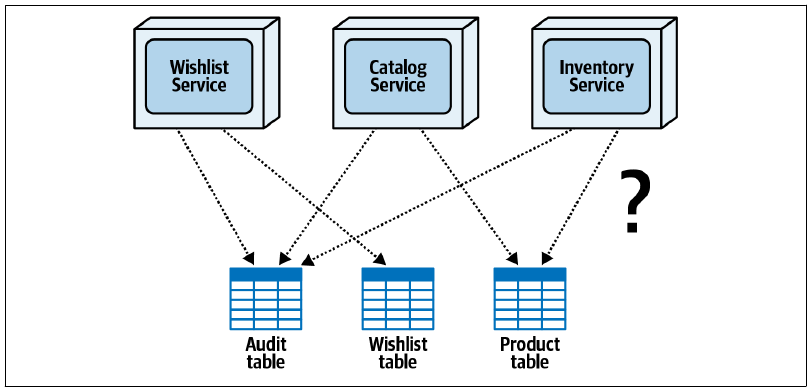
更复杂的是，愿望清单服务会写入“审计”表和“愿望清单”表，目录服务会写入“审计”表与“产品”表，库存服务也会写入“审计”表与“产品”表。这个简单的现实示例，突然就让数据所有权分配变成了复杂而混乱的任务。
本章将以图 图 9.1 为共同参照，讨论把数据所有权分配给服务时遇到的三种场景：单一所有权、公共所有权和联合所有权，并探索解决每种场景的技术，从而拆解这些复杂问题。
9.2 单一所有权场景
只有一项服务写入某张表时，就形成单一数据表所有权。这是最直接的数据所有权场景，解决起来也相对容易。
回看图 图 9.1，“愿望清单”表只有一项服务会写入，也就是愿望清单服务。在这个场景中，无论是否有其他服务需要只读访问该表，愿望清单服务显然都应该成为愿望清单表的所有者，如图 图 9.2 所示。
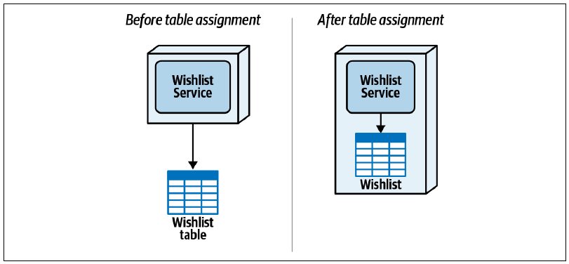
图右侧显示，愿望清单表成为愿望清单服务限界上下文的一部分。这种图示方法可以有效表示数据表所有权，以及服务与相应数据之间形成的限界上下文。
由于这种场景非常简单，我们建议首先处理单一表所有权关系，清理问题空间，再着手解决公共所有权和联合所有权等更复杂的场景。
9.3 公共所有权场景
大多数或全部服务都需要写入同一张表时，就形成公共数据表所有权。例如，图 图 9.1 显示，愿望清单、目录和库存三项服务都要写入“审计”表，记录用户执行的操作。既然所有服务都要写入，就很难确定审计表究竟应该归谁所有。这个简单例子只有三项服务；设想更现实的场景，可能有数百甚至数千项服务都必须写入同一张审计表。
一种看似简单的方案，是把审计表放进所有服务共同使用的共享数据库或共享模式。不幸的是，这会重新引入第 6 章开头介绍的全部数据共享问题，包括变更控制、连接耗尽、可扩展性和容错能力。因此，公共数据所有权需要另一种解决方案。
一种流行技术，是指定一项专用服务作为数据的主要且唯一所有者，也就是只有它负责向表中写入。其他需要执行写操作的服务把信息发送给专用服务，再由后者实际写表。
如果发送数据的服务不需要任何返回信息或确认，可以通过持久化队列使用异步“发后即忘”消息。若写操作需要向调用方返回信息，例如确认编号或数据库键，则可以用 REST、gRPC 或请求-回复消息（伪同步）执行同步调用。
回到审计表示例，图 图 9.3 中，架构师创建了新的“审计服务”，并把审计表的所有权分配给它，因此只有这项服务会读取或写入该表。这个例子不需要返回信息，所以采用带持久化队列的异步“发后即忘”消息，让愿望清单、目录和库存服务不必等待审计记录写入。
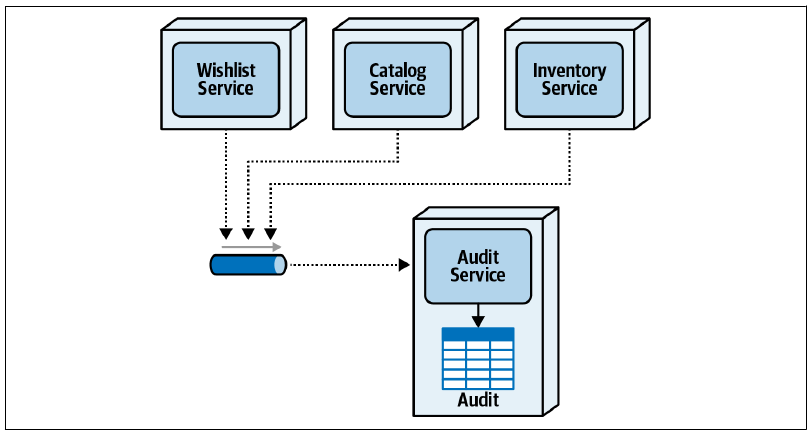
把队列设为持久化，意味着代理会把消息存储到磁盘；即使服务或代理失败，也能保证消息送达，避免消息丢失。
某些情况下，服务可能需要读取自己不拥有的公共数据。第 10 章会详细介绍这些只读访问技术。
9.4 联合所有权场景
联合所有权是数据所有权中最常见也最复杂的场景之一：多项服务会写入同一张表。它与公共所有权的区别在于，联合所有权只有同一领域中的少数几项服务写入同一张表，而公共所有权则是大多数或全部服务都会写入。
例如，图 图 9.1 中的全部服务都写入审计表，属于公共所有权；只有目录与库存服务写入产品表，则属于联合所有权。
图 图 9.4 单独展示了图 图 9.1 中的联合所有权示例。目录服务负责向表中加入新产品、删除不再销售的产品，并在静态产品信息变化时进行更新；库存服务则负责在产品被查询、销售或退货时，读取并更新每种产品的当前库存。
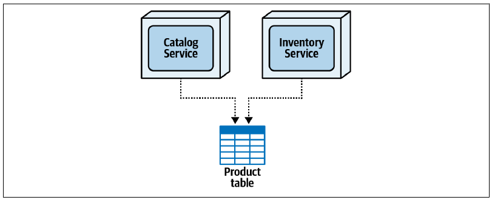
处理这类所有权场景有多种技术：数据表拆分、数据领域、委托和服务合并。以下各节会逐一说明。
9.4.1 数据表拆分技术
数据表拆分技术把一张表拆成多张表，使每项服务分别拥有自己负责的那部分数据。《Refactoring Databases》及其配套网站对此有详细介绍。
考虑图 图 9.4 的产品表示例。架构师或开发人员首先创建独立的“库存”表，其中包含产品 ID（键）和库存数量（可用商品数）；然后用现有产品表中的数据预填充库存表；最后从产品表删除库存数量列。示例 9-1 展示了如何在典型关系数据库中使用数据定义语言（DDL）实现这项技术。
示例 9-1：拆分产品表并把库存数量迁移到新库存表的 DDL 源代码
CREATE TABLE Inventory
(
product_id VARCHAR(10),
inv_cnt INT
);
INSERT INTO Inventory VALUES (product_id, inv_cnt)
AS SELECT product_id, inv_cnt FROM Product;
COMMIT;
ALTER TABLE Product DROP COLUMN inv_cnt;拆分数据表会把联合所有权转化为单表所有权：目录服务拥有产品表中的数据，库存服务拥有库存表中的数据。不过，如图 图 9.5 所示，创建或删除产品时，这项技术要求目录服务与库存服务相互通信，确保两张表的数据保持一致。
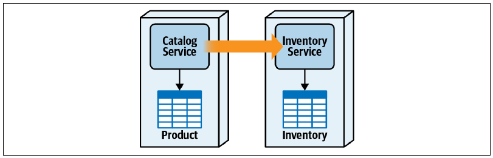
例如，加入新产品时，目录服务会生成产品 ID 并把新产品写入产品表，然后必须把新 ID 以及可能存在的初始库存数量发送给库存服务。删除产品时，目录服务先从产品表删除产品，再通知库存服务从库存表删除相应行。
在拆分后的数据表之间同步数据并不简单。目录服务与库存服务应该同步通信还是异步通信？目录服务增加或删除产品时，如果库存服务不可用，应该怎样处理？这些问题很难回答，通常取决于分布式架构中传统的可用性与一致性权衡。
选择可用性，意味着目录服务始终能够增加或删除产品更重要，即使库存表中可能没有创建相应记录；选择一致性，意味着两张表始终保持同步更重要，因此库存服务不可用时，产品创建或删除操作也必须失败。分布式架构中网络分区不可避免，CAP 定理指出，在这种情况下只能在一致性与可用性之间选择一项。
拆分数据表时，同步还是异步的通信协议也很重要。创建新产品时，目录服务是否必须确认相应库存记录已经加入？如果需要，就必须同步通信，以牺牲性能换取更好的数据一致性；如果不需要确认，则可以采用异步“发后即忘”通信，以牺牲数据一致性换取更好的性能。需要考虑的权衡实在很多。
表 表格 9.1 汇总了联合所有权采用数据表拆分技术时的权衡。
9.4.1.1 权衡
| 优点 | 缺点 |
|---|---|
| 保留限界上下文 | 必须修改和重构数据表 |
| 单一数据所有权 | 可能出现数据一致性问题 |
| 数据表更新之间没有 ACID 事务 | |
| 数据同步困难 | |
| 数据表之间可能出现数据复制 |
9.4.2 数据领域技术
联合所有权的另一种技术是建立共享数据领域。多项服务共享数据所有权，因而一张表会有多个所有者。由同一组服务共享的数据表被放进同一个模式或数据库，在服务与数据之间形成更宽泛的限界上下文。
图 图 9.6 看起来与图 图 9.4 的原始示意图很相似，但有一处显著差异：数据领域图把产品表放在一个独立方框中，位于各个所有服务的上下文之外。这种图示清楚表明，该表不属于任何单项服务，也不在任何单项服务的限界上下文中，而是由多项服务在一个更宽泛的限界上下文中共享。
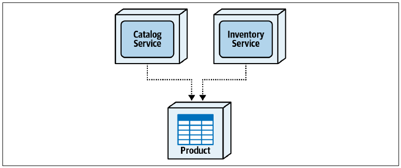
分布式架构，尤其微服务，通常不鼓励共享数据，但这项技术确实能解决其他联合所有权技术中的部分性能、可用性与数据一致性问题。由于服务不再相互依赖，目录服务可以创建或删除产品而不必与库存服务协调，库存服务也可以调整库存而不需要目录服务。两项服务彼此完全独立。
选择数据领域技术时，应重新评估为什么仍然需要独立服务，因为这些服务共享数据。合理理由可能包括不同的可扩展性、容错需求、吞吐量差异，或者隔离代码易变性，详见第 7 章。
不幸的是，在分布式架构中共享数据会引入许多问题。首先，改变数据结构，例如修改表模式时，需要付出更多工作。服务与数据之间形成了更宽泛的限界上下文，因此共享表结构发生变化时，可能需要在多项服务之间协调。这会增加开发工作、扩大测试范围并提高部署风险。
数据领域技术在所有权方面的另一个问题，是控制哪些服务对哪些数据具有写入职责。有时这并不重要；但如果必须控制特定数据的写操作，就需要投入额外工作，实施具体治理规则，维持特定数据表或列的写入所有权。
表 表格 9.2 汇总了联合所有权采用数据领域技术时的权衡。
9.4.2.1 权衡
| 优点 | 缺点 |
|---|---|
| 良好的数据访问性能 | 数据模式变更涉及更多服务 |
| 没有可扩展性与吞吐量问题 | 数据模式变更会扩大测试范围 |
| 数据保持一致 | 数据所有权治理（写入职责） |
| 没有服务依赖 | 数据模式变更会提高部署风险 |
9.4.3 委托技术
解决联合所有权的另一种方法是委托技术。它把数据表的单一所有权分配给一项服务，使其成为受托方；其他服务与受托方通信，由它代为执行更新。
这项技术的一项难题，是应该把哪项服务指定为受托方，也就是数据表的唯一所有者。第一种选择称为“主要领域优先级”，把所有权分配给最能代表数据主要领域的服务，换句话说，就是在该领域中对主要实体执行大多数 CRUD 操作的服务。第二种选择称为“运行特性优先级”，把所有权分配给需要更高性能、可扩展性、可用性和吞吐量等架构运行特性的服务。
为说明两种选择及其权衡，继续使用图 图 9.4 中目录服务与库存服务的联合所有权场景。目录服务负责创建、更新和删除产品以及检索产品信息；库存服务负责检索和更新产品库存数量，并在库存过低时确定何时补货。
采用主要领域优先级时，对主要实体执行大多数 CRUD 操作的服务成为表的所有者。如图 图 9.7 所示，目录服务对产品信息执行大多数 CRUD 操作，因此被指定为数据表的唯一所有者。库存服务不拥有该表，所以必须与目录服务通信，才能取得或更新库存数量。
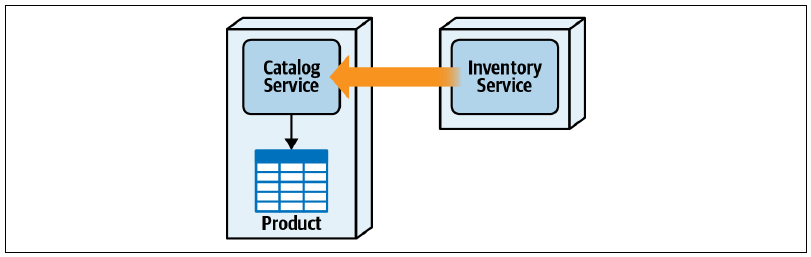
与前述公共所有权场景类似，委托技术总会迫使需要更新数据的其他服务进行服务间通信。图 图 9.7 中，库存服务必须通过某种远程访问协议把库存更新发送给目录服务，由后者代为更新和读取库存。通信既可以同步，也可以异步；一如既往，又要进行权衡分析。
同步通信时，库存服务必须等待目录服务完成库存更新，整体性能会受影响，但能保证数据一致性。异步发送库存更新可以让库存服务运行得快得多，但数据只能达到最终一致。此外，目录服务尝试更新库存时可能出错，库存服务无法保证库存确实得到更新，数据完整性也会受到影响。
采用运行特性优先级时，所有权角色会颠倒，因为库存更新的发生频率远高于静态产品数据更新。此时，数据表所有权会分配给库存服务。理由是更新产品库存属于购买产品时频繁发生的实时事务处理，而更新产品信息或增加、删除产品只是较少发生的管理任务，如图 图 9.8 所示。
采用这种选择后，频繁的库存数量更新可以直接调用数据库，而不必使用远程访问协议，因此库存操作会更快、更可靠；同时，易变性最高的数据，即库存数量，也能保持高度一致。
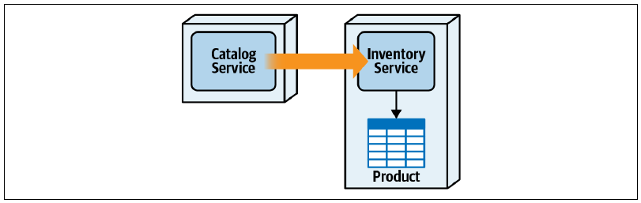
不过，图 图 9.8 的方案有一个重大问题：领域管理职责。库存服务负责管理产品库存，而不负责增加、删除和更新静态产品信息所需的数据库活动以及相应错误处理。因此，我们通常建议采用领域优先级方案，再借助复制式内存缓存或分布式缓存，缓解性能和容错问题。
无论哪项服务被指定为受托方，也就是数据表唯一所有者，委托技术都有缺点，其中最大的是服务耦合与服务间通信需求。这又会给非受托服务带来其他问题，包括执行写操作时缺少原子事务、网络与处理延迟造成性能偏低，以及容错能力较弱。
因此，委托技术通常更适合不要求原子事务，而且能通过异步通信接受最终一致性的数据库写入场景。表 表格 9.3 汇总了委托技术的整体权衡。
9.4.3.1 权衡
| 优点 | 缺点 |
|---|---|
| 形成单一数据表所有权 | 服务高度耦合 |
| 良好的数据模式变更控制 | 非所有者写入性能较低 |
| 向其他服务隐藏数据结构 | 非所有者写入没有原子事务 |
| 非所有者服务的容错能力较低 |
9.4.4 服务合并技术
上一节的委托方案突出了联合所有权的主要问题：服务依赖。服务合并技术把多个数据表所有者，也就是多项服务，合并为一项服务，从而消除服务依赖，并把联合所有权转化为图 图 9.9 所示的单一所有权场景。
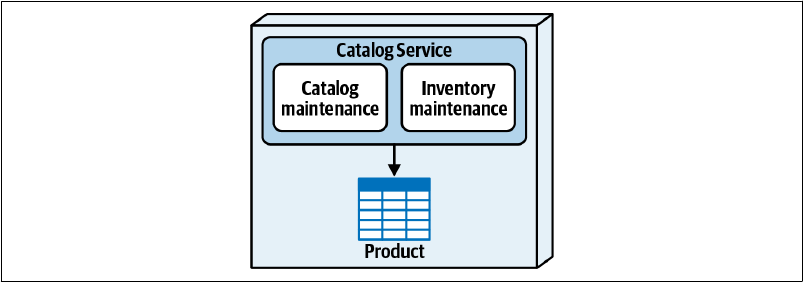
与数据领域技术一样，服务合并既解决服务依赖与性能问题，也处理联合所有权问题。不过，它同样有自己的权衡。
合并会形成粒度更粗的服务，扩大整体测试范围，并提高整体部署风险，也就是增加新功能或修复缺陷时破坏服务其他部分的可能性。合并还可能影响整体容错能力，因为服务的所有部分会一起失败。
整体可扩展性也会受到影响，因为服务的所有部分必须以相同方式扩展，即使某些功能并不需要达到其他功能的扩展级别。例如，在图 图 9.9 中，原本位于独立目录服务中的目录维护功能必须进行无谓扩展，才能满足库存查询与更新功能的高负载需求。
表 表格 9.4 汇总了服务合并技术的整体权衡。
9.4.4.1 权衡
| 优点 | 缺点 |
|---|---|
| 保留原子事务 | 粗粒度扩展 |
| 良好的整体性能 | 容错能力较弱 |
| 部署风险增加 | |
| 测试范围扩大 |
9.5 数据所有权总结
图 图 9.10 展示了对图 图 9.1 应用本节技术后得到的数据表所有权分配结果。
对于愿望清单服务涉及的单表场景，我们直接把所有权分配给愿望清单服务，在服务与数据表之间形成紧密的限界上下文。对于审计表涉及的公共所有权场景，我们创建了新的审计服务，让其他所有服务向持久化队列发送异步消息。最后，对于目录服务与库存服务共同写入产品表的复杂联合所有权场景，我们选择委托技术，把产品表的单一所有权分配给目录服务，由库存服务向目录服务发送更新请求。
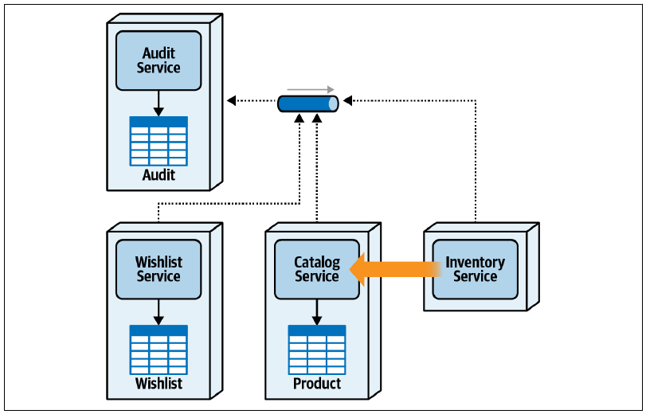
把数据表所有权分配给服务后，架构师还必须分析业务工作流及其事务要求，验证所有权分配是否合理。
9.6 分布式事务
架构师和开发人员想到事务时，通常会想到一个原子工作单元：多次数据库更新要么一起提交，要么在发生错误时全部回滚。这类原子事务通常称为 ACID 事务。正如第 6 章所述，ACID 是描述单工作单元数据库原子事务四项基本属性的缩写：原子性、一致性、隔离性和持久性。
要理解分布式事务如何工作以及其中的权衡，必须完整理解 ACID 的四项属性。我们坚信，如果不理解 ACID 事务，架构师就无法进行必要的权衡分析，判断何时应该以及不应该使用分布式事务。因此，下面先深入说明 ACID，再介绍它与分布式事务的差异。
原子性（Atomicity） 意味着，无论事务中进行了多少次更新，都必须把全部更新作为一个工作单元一起提交或回滚。也就是说，所有更新被视为一个整体，全部变更要么一起提交，要么一起撤销。
例如，注册客户需要把客户资料写入“客户资料”表，把信用卡信息写入“钱包”表，再把安全相关信息写入“安全”表。假设资料和信用卡成功写入，但安全信息写入失败；原子性会回滚资料与信用卡写入，让各数据表保持同步。
一致性（Consistency） 意味着，在事务执行过程中，数据库绝不会处于不一致状态，也不会违反其中规定的完整性约束。例如，在 ACID 事务中，系统不能在加入相应汇总记录（如订单）之前先加入明细记录（如订单项）。某些数据库会把检查推迟到提交时，但一般而言，程序员不能在事务过程中违反外键约束等一致性约束。
隔离性（Isolation） 指单个事务彼此交互的程度。它可以防止其他事务在业务请求执行期间看到未提交的事务数据。例如，在 ACID 事务中，客户资料写入“客户资料”表后，ACID 事务范围之外的其他服务在整个事务提交前都不能访问这些新信息。
持久性（Durability） 意味着，一旦事务提交返回成功响应，无论之后发生什么系统故障，所有数据更新都保证永久存在。
为说明 ACID 事务，假设一位客户在单个用户界面中输入注册 Sysops Squad 应用所需的全部资料、希望纳入支持计划的电子产品以及账单信息。这些信息会发送给图 图 9.11 所示的单一“客户服务”，由它执行客户注册业务请求涉及的全部数据库操作。
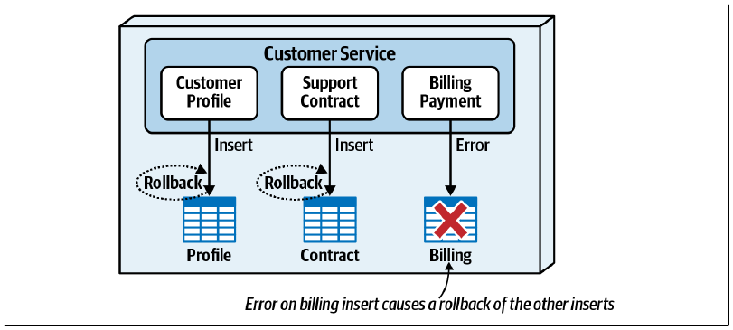
由于尝试写入账单信息时发生错误，之前写入的资料与支持合同信息都被回滚，这体现了 ACID 的原子性与一致性。图中没有展示的是，事务执行期间写入各表的数据不会对其他请求可见，这体现了隔离性。
ACID 事务可以存在于分布式架构中每项服务的上下文内，但前提是相应数据库也支持 ACID 属性。每项服务可以在原子业务事务范围内，对自己拥有的数据表进行提交与回滚。不过，如果业务请求跨越多项服务，整个业务请求就无法成为 ACID 事务，而会变成分布式事务。
一个包含多次数据库更新的原子业务请求由多个独立部署的远程服务共同执行时，就会形成分布式事务。图 图 9.12 中，同一项新客户注册请求，现在分布在三项独立部署的服务上：“客户资料服务”“支持合同服务”和“账单支付服务”。图中的笔记本电脑代表发起请求的客户。
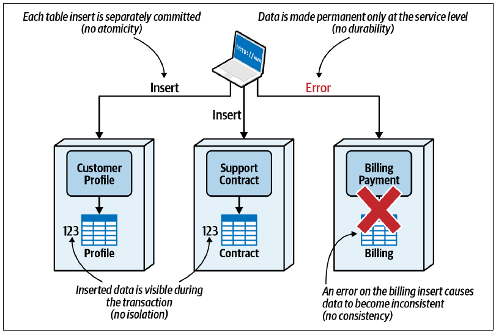
可以看到，分布式事务不支持 ACID 属性。
不支持原子性，因为每项独立部署的服务都会提交自己的数据，只执行整个原子业务请求的一部分。在分布式事务中，原子性受限于单项服务，而不是客户注册等整个业务请求。
不支持一致性，因为一项服务失败会使负责业务请求的多个数据表彼此不同步。图 图 9.12 中，账单支付服务写入失败，资料表和合同表与账单表不同步；本节稍后会介绍如何处理。各项服务分别提交时，传统关系数据库约束，例如外键始终与主键匹配，也无法跨服务应用，因此一致性还会进一步受影响。
不支持隔离性，因为客户资料服务在分布式客户注册事务中写入资料数据后，任何其他服务或请求都能立即访问这些资料，即使客户注册流程，也就是当前事务，尚未完成。
整个业务请求不支持持久性，持久性只能由各项服务分别保证。换句话说，任何单项服务提交数据，都不能确保整个业务事务范围内的全部数据永久存在。
分布式事务不采用 ACID，而是支持一种称为 BASE 的属性。在化学中，酸与碱彼此相反；原子事务与分布式事务也是如此：ACID 事务与 BASE 事务相对。BASE 描述分布式事务的三项属性：基本可用性、软状态和最终一致性。
基本可用性（Basic Availability，BASE 中的 BA） 意味着，分布式事务中的全部服务或系统都应该能够参与事务。异步通信可以解耦服务，并处理参与者带来的可用性问题；但它会影响整个原子业务事务达到数据一致所需的时间。
软状态（Soft State，BASE 中的 S） 描述分布式事务正在进行，而原子业务请求的状态尚未完成，某些情况下甚至还不明确。图 图 9.12 的客户注册示例中，客户资料信息已经写入并提交到资料表，但支持合同与账单信息尚未写入，此时就处于软状态。
如果三项服务并行写入各自数据，还会出现状态未知：在三项服务都报告数据处理成功之前，任何时刻都无法确切知道原子业务请求的状态。使用异步通信的工作流中，分布式事务正在进行还是已经完成，通常很难判断，详见第 11 章。
最终一致性（Eventual Consistency，BASE 中的 E） 意味着，只要时间足够，分布式事务的所有部分最终都会成功完成，全部数据也会彼此同步。采用哪种最终一致性模式以及如何处理错误，将决定参与事务的所有数据源需要多长时间才能达到一致。
下一节将介绍三种最终一致性模式及其各自权衡。
9.7 最终一致性模式
为了获得更好的性能、可扩展性、弹性、容错能力和可用性等架构运行特性，分布式架构高度依赖最终一致性作为权衡。数据源与系统之间实现最终一致性的方式很多，目前主要使用三种模式：后台同步模式、基于请求的协调模式，以及基于事件的模式。
为说明每种模式及其工作方式，再次考虑之前讨论的 Sysops Squad 客户注册流程。图 图 9.13 中有三项独立服务参与注册：“客户资料服务”维护基本资料；“支持合同服务”维护每位客户纳入 Sysops Squad 维修计划的产品；“账单支付服务”向客户收取支持计划费用。客户 123 已经订阅 Sysops Squad 服务，所以每项服务所拥有的相应数据表中都有这位客户的数据。
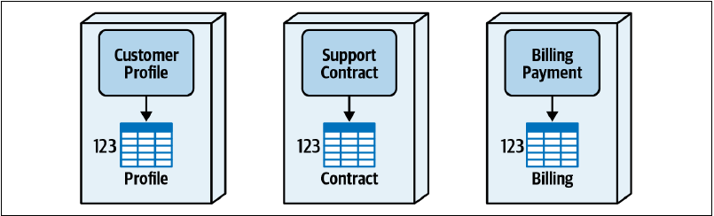
客户 123 决定不再使用 Sysops Squad 支持计划，于是取消订阅。如图 图 9.14 所示，客户资料服务从用户界面收到请求，从资料表删除客户，并向客户确认取消订阅成功，将不再收费。然而，这位客户的数据仍然存在于支持合同服务拥有的合同表，以及账单支付服务拥有的账单表中。
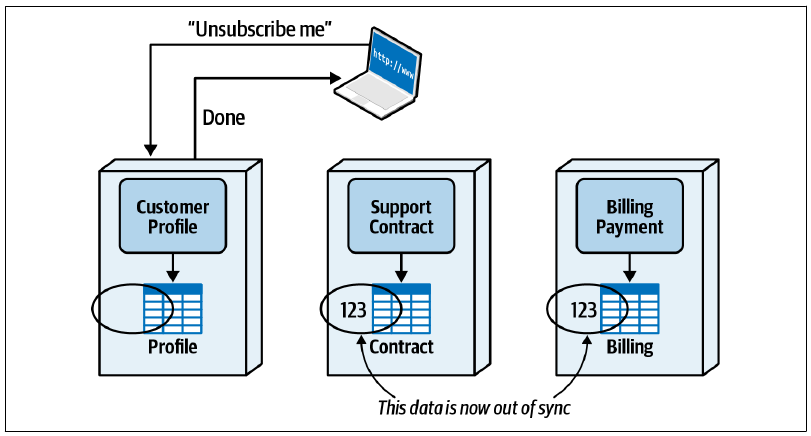
以下将使用这个场景说明各种最终一致性模式，展示如何让这项原子业务请求的全部数据恢复同步。
9.7.1 后台同步模式
后台同步模式使用独立的外部服务或进程，定期检查数据源并保持彼此同步。数据源达到最终一致所需的时间，取决于后台进程的实现方式：它可能是半夜某个时刻运行的批处理作业，也可能是定期唤醒，例如每小时检查一次数据源一致性的服务。
无论使用夜间批处理还是周期进程，这种模式通常都需要最长时间才能让数据源达到一致。不过，很多情况下并不需要数据源立即同步。考虑图 图 9.14 的客户取消订阅示例：客户取消后，其支持合同和账单信息暂时仍然存在其实无关紧要，在夜间完成最终一致已经足够。
这项模式的一项难题，是负责同步全部数据的后台进程必须知道哪些数据发生过变化。可以通过事件流、数据库触发器，或者读取源表数据并让目标表与源数据对齐来实现。无论怎样识别变更，后台进程都必须了解事务涉及的全部数据表与数据源。
图 图 9.15 展示了后台同步模式如何处理 Sysops Squad 取消注册。11:23:00，客户发出取消支持计划请求。客户资料服务收到请求、删除数据，并在一秒后的 11:23:01 向客户返回取消成功。23:00，后台批量同步进程启动；它通过事件流或主表与辅助表之间的差异，检测到客户 123 已被删除，再从合同表与账单表删除相应数据。
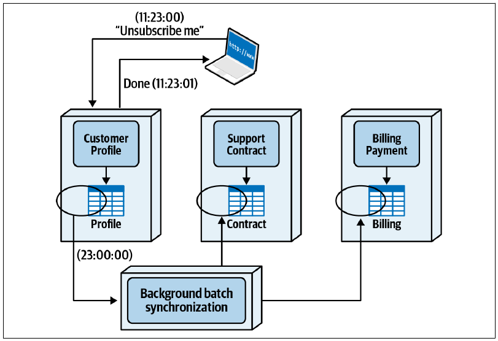
这项模式整体响应良好，因为终端用户不必等待整个业务事务完成，本例中就是取消支持计划。不过，它也存在一些严重权衡。
后台同步模式最大的缺点，是把所有数据源耦合在一起，破坏数据与服务之间的每一个限界上下文。图 图 9.16 中，后台批量同步进程必须拥有各项服务所拥有数据表的写权限，因此每张表实际上都由相应服务与后台同步进程共同拥有。
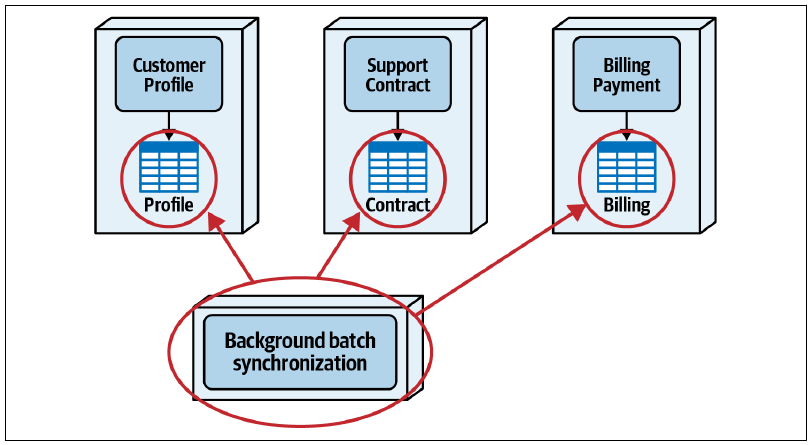
服务与后台同步进程共享数据所有权会带来很多问题，也再次强调分布式架构为什么需要紧密的限界上下文。每项服务所拥有的数据表发生结构变化，例如修改列名或删除列时，还必须与外部后台进程协调，使变更变得困难而耗时。
除了变更控制困难，还会出现业务逻辑重复。乍看图 图 9.15，后台进程似乎只需对合同表和账单表中包含客户 123 的所有行执行 DELETE。然而，各项服务可能为这个操作规定了特定业务规则。
例如，客户取消订阅后，其现有支持合同与账单历史会保留三个月，以防客户决定重新订阅。因此系统不会删除相应行，而是把 remove_date 列设为表示删除日期的长整型值；该列为零表示客户仍然有效。两项服务每天检查 remove_date，确定应该从各自表中删除哪些行。这段业务逻辑在哪里？当然在支持合同服务和账单支付服务中–还要在后台批处理进程中再复制一份！
后台同步最终一致性模式不适合要求紧密限界上下文的分布式架构，例如微服务，因为数据所有权与功能之间的耦合是这类架构的关键。它更适合互不通信也不共享数据的封闭、自包含异构系统。
例如，一个承包商订单录入系统接受建筑材料订单，另一个采用不同平台实现的独立系统负责开具发票。承包商订购材料后，后台同步进程把订单移到发票系统以生成发票；承包商修改或取消订单时，同步进程也把变更移到发票系统更新发票。这是系统通过最终一致使两个系统中的承包商订单始终同步的典型例子。
表 表格 9.5 汇总了后台同步最终一致性模式的权衡。
9.7.1.1 权衡
| 优点 | 缺点 |
|---|---|
| 服务彼此解耦 | 数据源耦合 |
| 响应良好 | 实现复杂 |
| 破坏限界上下文 | |
| 可能重复业务逻辑 | |
| 最终一致速度慢 |
9.7.2 基于请求的协调模式
管理分布式事务的一种常见方法，是在业务请求执行期间，也就是终端用户仍在等待时，保证所有数据源完成同步。这种方法称为“基于请求的协调模式”。
与后台同步模式以及下一节介绍的基于事件模式不同，基于请求的协调模式试图在业务请求期间处理整个分布式事务，因此需要某种协调器来管理事务。协调器可以是指定的现有服务，也可以是新建的独立服务；它负责管理处理请求所需的全部工作，包括掌握业务流程、了解参与者、处理多播逻辑与错误，以及拥有契约。
一种实现方式，是指定某项主要服务（如果存在）管理分布式事务。如图 图 9.17 所示，某项服务除了承担原有职责，还要担任协调器；本例中是客户资料服务。
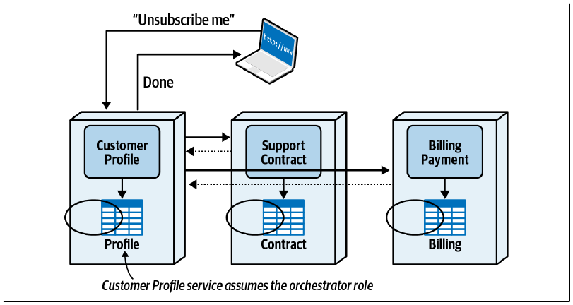
这种方式不需要独立协调服务，却容易让指定服务承担过多职责。管理分布式事务的服务不仅要履行协调器角色，还必须完成自己的工作。另一项缺点是，它很容易形成服务之间的紧耦合与同步依赖。
采用基于请求的协调模式时，我们通常更偏好为业务请求建立专用协调服务。图 图 9.18 所示的方法解除客户资料服务管理分布式事务的职责，把它交给独立协调服务。下面就用这种方案说明最终一致性模式的工作方式与权衡。
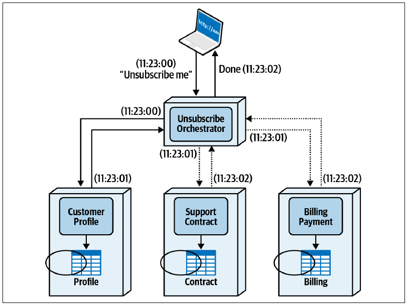
11:23:00，客户发出取消 Sysops Squad 支持计划的请求。“取消订阅协调服务”收到请求后，同步转发给客户资料服务，从资料表删除客户。一秒后，客户资料服务向协调器返回确认；协调器再通过线程或某种异步协议，同时向支持合同与账单支付服务发送请求。两项服务处理取消订阅，并在一秒后返回确认，表示处理完成。此时全部数据都已同步，协调服务在 11:23:02，也就是初始请求发出两秒后，向客户端确认取消成功。
首先要观察的权衡是：协调方式通常优先保证数据一致性，而牺牲响应速度。增加专用协调服务不仅会增加网络跳数与服务调用；协调器采用串行还是并行调用，也会影响它与所调用服务来回通信所需的额外时间。
图 图 9.18 如果让客户资料请求与其他服务同时执行，可以改善响应时间；但出于错误处理与一致性考虑，这里选择同步执行。例如，如果客户存在未付账单，无法从资料表删除，那么支持合同与账单支付服务中也不需要执行任何必须撤销的操作。这又体现了一致性优于响应速度。
除了响应速度，这项模式的另一项权衡是复杂的错误处理。基于请求的协调模式看起来很直接，但如果客户已经从资料表和合同表删除，删除账单表信息时却发生图 图 9.19 所示的错误，会怎样？由于客户资料与支持合同服务分别提交了自己的操作，协调服务必须在客户等待处理时决定采取哪种行动：
- 再次向账单支付服务发送请求，重试一次？
- 执行补偿事务，让支持合同与客户资料服务撤销各自更新？
- 告诉客户发生错误，请稍后重试，同时尝试修复不一致？
- 忽略错误，希望其他进程会处理，并告诉客户取消订阅成功？
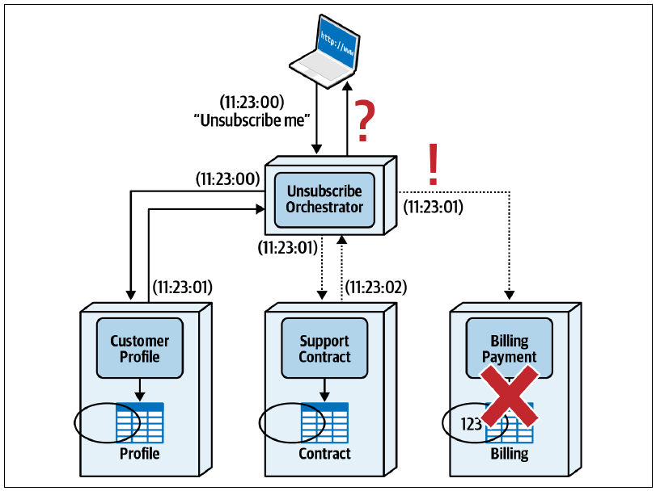
这个现实场景给协调器造成了棘手局面。由于采用的就是这种最终一致性模式，没有其他机制可以修正数据、恢复同步，因此上述第三、第四项实际上不可行。协调器唯一真正的选择，是尝试撤销分布式事务：发出补偿更新，把客户重新写入资料表，并把合同表的 remove_date 列重置为零。
这要求协调器掌握重新写入客户所需的全部信息，还必须保证新建客户时不会产生初始化账单信息或支持合同等副作用。
分布式架构中的补偿事务还有另一项复杂性：补偿过程本身也可能失败。假设系统向客户资料服务发出补偿事务，要求重新写入客户，这项操作却失败了。接下来怎么办？此时数据会更加不同步，又没有其他服务或进程能够修复。多数这类情况最终需要人工干预，修复数据源并恢复同步。第 12 章“事务型 Saga 模式”会更详细地讨论补偿事务与事务型 Saga。
表 表格 9.6 汇总了基于请求的协调最终一致性模式的权衡。
9.7.2.1 权衡
| 优点 | 缺点 |
|---|---|
| 服务彼此解耦 | 响应较慢 |
| 数据一致及时 | 错误处理复杂 |
| 原子业务请求 | 通常需要补偿事务 |
9.7.3 基于事件的模式
对于微服务和事件驱动架构等现代分布式架构，基于事件的模式是最流行、最可靠的最终一致性模式之一。它把事件与异步发布-订阅消息模型结合起来，把“客户已取消订阅”等事件或“取消客户订阅”等命令消息发布到主题或事件流。参与分布式事务的服务监听特定事件，并作出响应。
异步消息处理既并行又解耦，因此数据达到最终一致所需的时间通常很短。服务彼此高度解耦，响应也很好，因为触发最终一致性事件的服务不必等待数据同步，就能向客户返回信息。
图 图 9.20 展示了这项模式的工作方式。11:23:00，客户向客户资料服务发出取消订阅请求。客户资料服务接收请求，从资料表删除客户，向消息主题或事件流发布消息，并在一秒后通知客户取消成功。与此同时，支持合同与账单支付服务都收到取消订阅事件，执行取消客户所需的功能，使所有数据源最终达到一致。
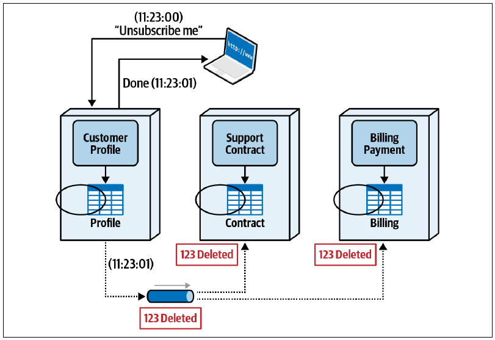
使用 ActiveMQ、RabbitMQ、AmazonMQ 等标准基于主题的发布-订阅消息时，响应事件的服务必须配置为持久订阅者，保证消息代理或接收消息的服务失败时不会丢失消息。持久订阅者与持久化队列概念类似：消息发布时，订阅者，本例中是支持合同与账单支付服务，不需要处于可用状态；等它恢复后，仍能保证收到消息。采用事件流时，Apache Kafka 等消息代理必须始终持久化消息，并保证它在主题中保留合理时长。
基于事件模式的优点是响应迅速、数据一致及时、服务彼此解耦。不过，与所有最终一致性模式一样，它的主要权衡是错误处理。
如果某项服务不可用，例如图 图 9.20 中的账单支付服务，持久订阅可以保证它恢复后最终收到并处理事件。但如果服务在处理事件期间失败，事情会迅速变得复杂。
大多数消息代理会尝试交付消息若干次；接收方连续失败后，代理会把消息送到死信队列（DLQ）。这是一个可配置的目的地，事件会保存在其中，直到自动化进程读取并尝试修复问题。如果无法通过程序修复，通常就会把消息交给人工处理。
表 表格 9.7 汇总了基于事件的最终一致性模式的权衡。
9.7.3.1 权衡
| 优点 | 缺点 |
|---|---|
| 服务彼此解耦 | 错误处理复杂 |
| 数据一致及时 | |
| 响应迅速 |
9.8 Sysops Squad 案例：工单处理的数据所有权
1 月 18 日，星期二，09:14
与 Dana 交谈并了解数据所有权与分布式事务管理后，Sydney 和 Addison 很快意识到：如果两个团队不协作，就无法拆分数据、分配所有权并形成紧密的限界上下文。
“难怪这里好像总有事情行不通，”Sydney 说，“我们与数据库团队一直有问题和争论。现在我终于看到，公司把我们当成两个独立团队会造成什么结果。”
“没错，”Addison 说，“我很高兴现在能和数据团队更紧密合作。按照 Dana 的说法，对数据表执行写操作的服务拥有该表，无论有多少其他服务需要只读访问。这样看来，数据应该由用户维护服务拥有。”
Sydney 表示同意，Addison 则为单表所有权场景建立了一份通用架构决策记录。
背景
在服务与数据之间形成限界上下文时，必须把数据表所有权分配给特定服务或服务组。
决策
如果只有一项服务写入某张表，就把数据表所有权分配给该服务。需要只读访问其他限界上下文中数据表的服务，不能直接访问包含该表的数据库或模式。
按照数据库团队的定义，对数据表执行写操作的服务拥有该表。因此，在单表所有权场景中，无论多少其他服务需要访问，始终只指定一个所有者，也就是维护数据的服务。
后果
根据采用的访问技术，需要只读访问其他限界上下文中数据表的服务，访问数据时可能会遇到性能和容错问题。
更好地理解数据表所有权以及如何在服务与数据之间建立限界上下文后，Sydney 和 Addison 开始处理调查功能。工单完成服务会把工单完成时间戳和执行工作的专家写入“调查”表；调查服务会写入调查发送给客户的时间戳，并在收到调查后写入全部结果。
“现在更理解限界上下文和数据表所有权后，事情没那么难了。”Sydney 说。
“好，继续调查功能。”Addison 说。
“糟糕，”Sydney 说，“工单完成服务和调查服务都会写入调查表。”
“这就是 Dana 所说的联合数据表所有权。”Addison 说。
“那有哪些选择？”Sydney 问。
“拆分数据表行不通，所以只剩两种，”Addison 说，“可以使用公共数据领域，让两项服务共同拥有数据；也可以采用委托技术，只指定一项服务为所有者。”
“我喜欢公共数据领域，让两项服务都写入数据表并共享同一个模式。”Sydney 说。
“但这个场景行不通，”Addison 说，“工单完成服务已经连接公共工单数据领域。记住，一项服务不能连接多个模式。”
“哦，对。等等，我知道了，把调查表加入工单数据领域模式。”Sydney 说。
“但这又开始把所有数据表重新合到一起，”Addison 说，“很快我们就会回到单体数据库。”
“那怎么办？”Sydney 问。
“等等，我好像看到一个好方案，”Addison 说，“工单完成后，工单完成服务本来就必须向调查服务发送消息，启动调查流程。何不把必要数据随消息一并传递，让调查服务在创建客户调查时写入数据？”
“太棒了，”Sydney 说，“这样工单完成服务就完全不需要访问调查表。”
Addison 与 Sydney 同意由调查服务拥有调查表，并采用图 图 9.21 所示的委托技术：工单完成服务通知调查服务启动调查流程时，同时传递数据。Addison 为此写下架构决策记录。
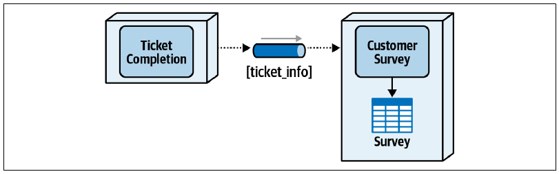
背景
工单完成服务和调查服务都会写入调查表。由于这是联合所有权场景，可选择使用公共共享数据领域，或采用委托技术。受调查表结构限制，不能拆分数据表。
决策
调查服务将成为调查表的唯一所有者，也就是只有它能对该表执行写操作。
工单被标记为完成且系统接受后，工单完成服务需要向调查服务发送消息，启动客户调查处理。既然它本来就会发送通知事件，可以把必要工单信息随事件一起传递，从而消除工单完成服务访问调查表的需要。
后果
工单完成服务需要写入调查表的全部必要数据，都必须作为触发客户调查流程时的消息载荷发送。
在单体系统中，工单完成功能会把调查记录作为完成流程的一部分写入。采用这项决策后，调查记录创建成为独立于工单完成流程的活动，改由调查服务处理。